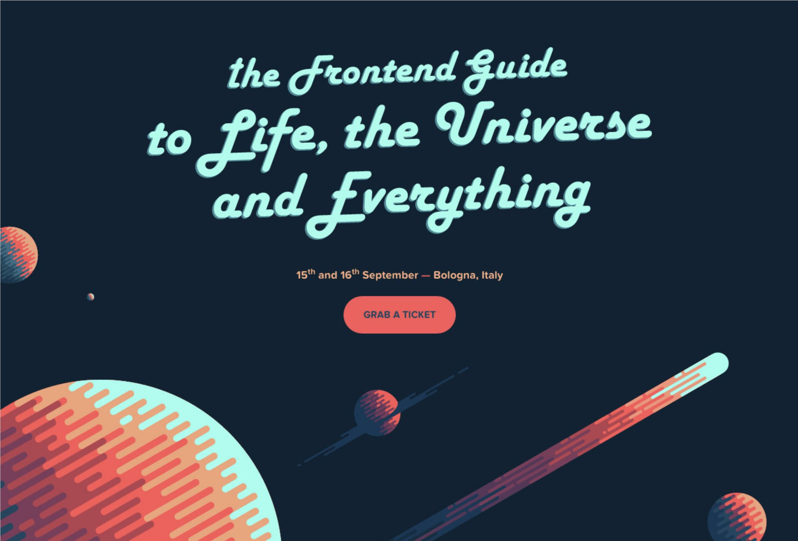

Lab 13:Typography 01
For this lab we were tasked with replicating a website wih large typography from one of the provided sources. We had to find a similar background and font to the real website to use in our "fake".
Challange
We actually managed to find an image that was almost exactly the same as the one in the real website, the differences being the image was flipped and had the word SPACE written across it. There were also a few planets missing from the fake version. I flipped the image using Photoshop and also tried removing the "SPACE" to better match the real website.
Problems
Problems we encountered were getting the font to match. After looking online we couldn't find a match for the font used in the original. We downloaded the one closest to it but we couldn't get it to apply to the css. Also during the photoshop process I wasn't able to completley remove the "SPACE" that was written across the screen.
Results
The real website
Fake website